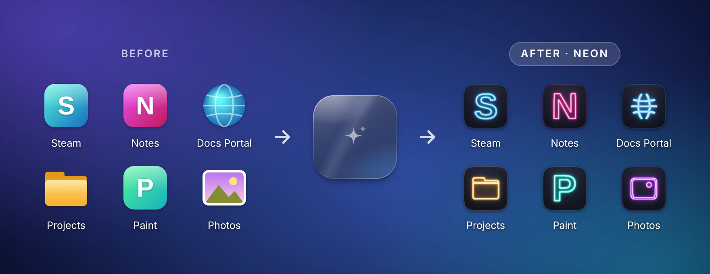
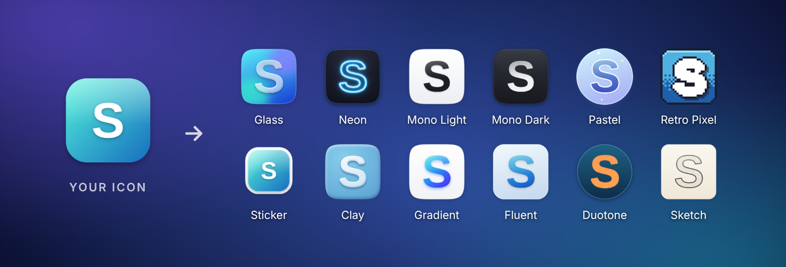
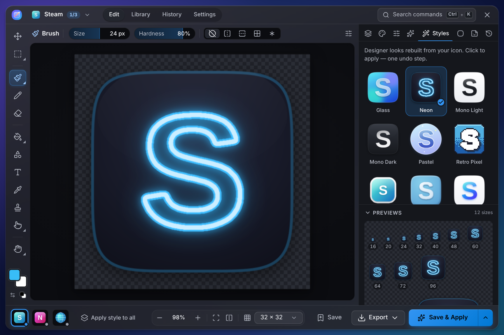

Give any desktop icon a new look.
Drag a shortcut onto Reskin's floating box, pick a style, done. Neon, Glass, Retro Pixel and nine more — or draw your own.
No account · No admin rights · Undo anything · Portable version

Three steps. That's it.
No design skills needed — and nothing you do is permanent.
- 1
Drop
Drag any desktop shortcut, game, folder or image onto the box.
- 2
Restyle
Click a style, or paint, recolour and add a backdrop. Every step can be undone.
- 3
Save & Apply
The box flies your new icon onto the desktop. Changed your mind? Click Undo.
12 styles, one click
Every style is rebuilt from your icon, so your apps stay recognisable. Apply style to all gives your whole desktop the same look.

Or make it entirely yours
Brushes, shapes, text, stickers and emoji, layers, 20+ adjustments and backdrops — with live previews at every size, on your own wallpaper and on the taskbar.

Why Reskin
Instant
Drop an icon, click a style, done. No image editing know-how required.
Nothing is permanent
Undo one icon, or put every original back in one go.
Your whole desktop
App shortcuts, Steam and Epic games, folders, websites, This PC and the Recycle Bin.
Private
No account, no ads, no tracking. Reskin works entirely offline.
Light
A 2 MB download that installs for you alone — no admin rights needed.
Free & open source
No trial, no catch. Every line of code is on GitHub.
Questions
Windows says "Windows protected your PC". Is Reskin safe?
Yes. Reskin is new and isn't code-signed yet, so Microsoft Defender SmartScreen doesn't recognise it. Click More info, then Run anyway. Reskin is open source — anyone can read its code — and every release lists the files' SHA-256 checksums in SHA256SUMS.txt.
How do I get my old icons back?
Right after applying, click Undo on the box. Any time later, right-click the box → Restore all icons… puts every original back, and History in Reskin undoes a single one.
Does Reskin change my apps or games?
No. It only changes the icon of the shortcut or folder you drop on it. Programs themselves are never modified.
Where did the box go?
Press Ctrl + Alt + Shift + R, or choose Show box from Reskin's tray icon. The box hides by itself while a full-screen app or game runs. After a restart, open Reskin from the Start menu — or turn on Settings → Start with Windows.
Which PCs does it run on?
Windows 10 and 11, 64-bit. Reskin uses Microsoft's WebView2, which comes with Windows 11 and current Windows 10; the installer adds it if it's missing.
How do I uninstall it?
Windows Settings → Apps, find Reskin, Uninstall. Tick Delete app data to also put all your original icons back first.
Is it really free?
Yes. Reskin is free and open source under the MIT license — no trial, no ads, no account.
Ready for a new look?
Like it? A ⭐ on GitHub helps other people find Reskin.